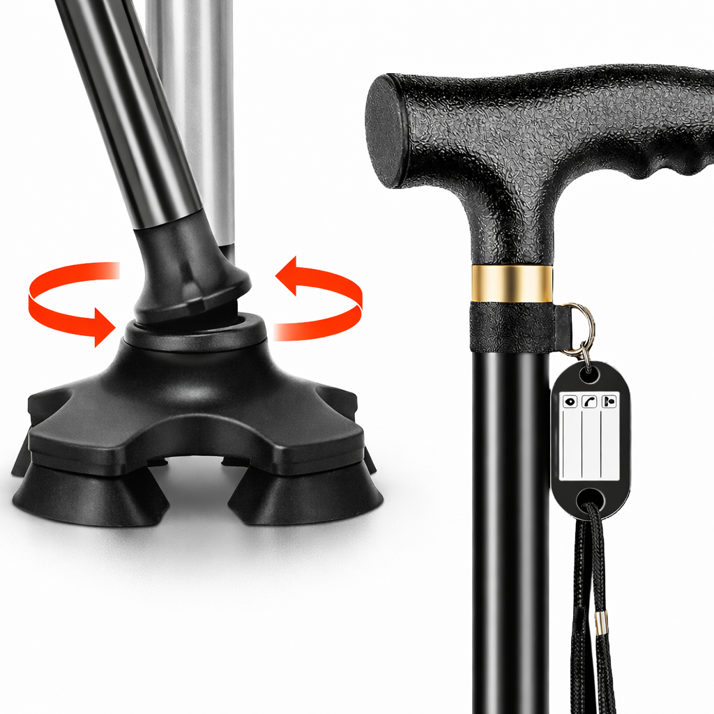
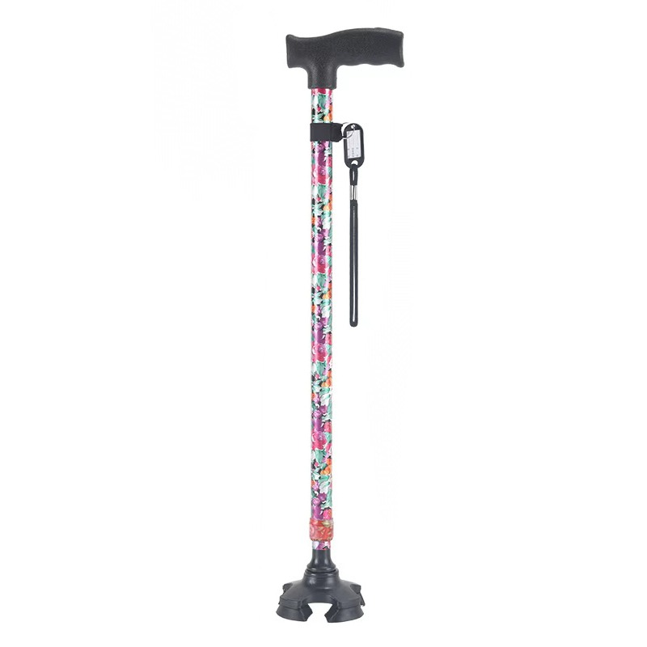
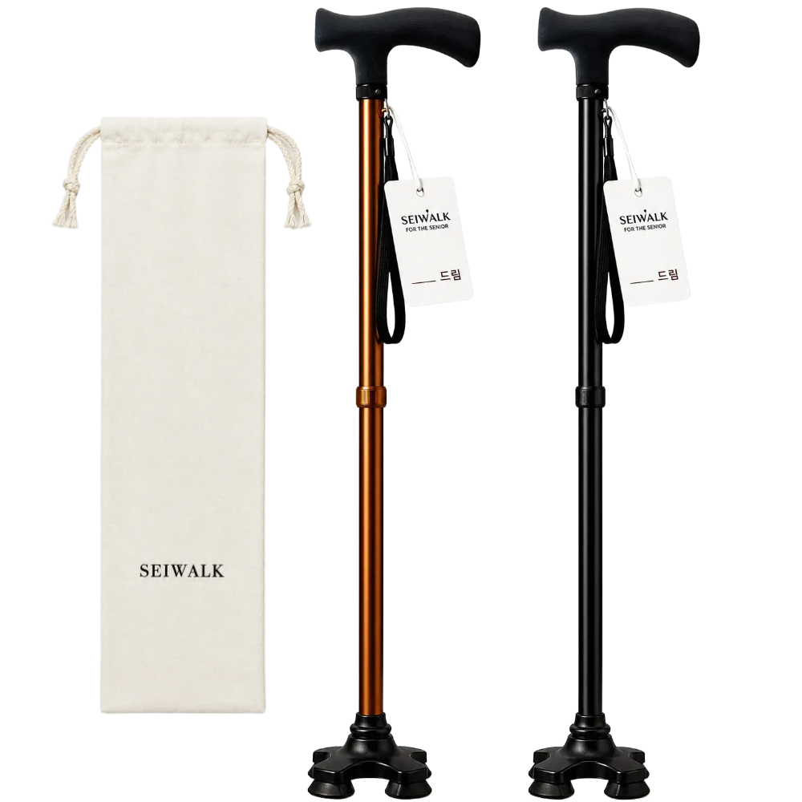

노인 지팡이 추천 TOP 3 — 네발·접이식 비교
이 글에는 쿠팡 파트너스 활동의 일환으로 일정액의 수수료를 제공받는 링크가 포함되어 있습니다.
보행기까지는 아니어도 걸을 때 균형이 불안한 어르신에게 네발 지팡이는 좋은 선택입니다. 바닥에 스스로 서고 지지 면이 넓어 일반 지팡이보다 안정적입니다. 미끄럼방지·길이조절·무게 기준으로 정리했습니다.
한 줄 정리
가볍고 저렴한 입문이면 리브하움, 가벼운 여성용이면 NEDYOU, 접어서 휴대까지면 세이워크가 무난합니다.
추천 요양용품 TOP 3
가성비

가성비 네발
리브하움 4발 지팡이 미끄럼방지 길이조절
13,000원 · 쿠팡 기준(변동 가능) · 로켓배송
네발미끄럼방지길이조절
이런 분께 · 저렴하게 안정적인 네발 지팡이를 시작하려는 경우
- 부담 없는 가격에 네발의 안정감
- 길이조절·미끄럼방지 기본 갖춤
참고 · 초경량·접이 기능은 상위 제품이 낫습니다.
쿠팡 최저가 확인하기 →베스트

가벼운 여성용
NEDYOU 노인 미끄럼방지 네발 길이조절 가벼운 지팡이
29,500원 · 쿠팡 기준(변동 가능) · 로켓배송
경량네발길이조절
이런 분께 · 손힘이 약해 가벼운 지팡이가 필요한 어르신
- 가벼워 손목 부담이 적음
- 네발이라 세워둘 수 있고 안정적
참고 · 접이 휴대는 세이워크가 편합니다.
쿠팡 최저가 확인하기 →프리미엄

접이식 휴대
세이워크 어르신 노인 네발 접이식 지팡이
30,000원 · 쿠팡 기준(변동 가능) · 로켓배송
접이식네발휴대
이런 분께 · 외출·차량 이동이 많아 접어 휴대하려는 경우
- 접이식이라 가방·차에 넣기 편함
- 네발 안정감과 휴대성을 함께 갖춤
참고 · 접이 구조상 관절부 관리가 필요합니다.
쿠팡 최저가 확인하기 →| 구분 | 가성비(리브하움) | 베스트(NEDYOU) | 프리미엄(세이워크) |
|---|---|---|---|
| 형태 | 네발 | 네발 경량 | 네발 접이식 |
| 휴대 | 기본 | 기본 | 접이식 |
| 추천 | 저렴 입문 | 가벼움 우선 | 외출·휴대 |
| 가격대 | 1만원대 | 2만원대 | 3만원대 |
네발 지팡이가 좋은 이유
네발(4점) 지팡이는 바닥에 닿는 면이 넓어 스스로 서 있고, 일반 외발 지팡이보다 지지력이 좋아 균형이 불안한 어르신에게 안정적입니다. 다만 바닥이 고르지 않은 곳에서는 네 다리가 모두 닿는지 확인하며 써야 합니다.
지팡이 고를 때 체크포인트
- 길이조절 — 팔을 자연스럽게 내렸을 때 손목 높이에 손잡이가 오도록 맞춥니다.
- 미끄럼방지 팁 — 바닥 고무가 닳지 않았는지, 접지력이 좋은지 확인하세요.
- 무게 — 손힘이 약하면 가벼운 알루미늄 제품이 편합니다.
- 손잡이 그립 — 손에 잘 잡히고 미끄럽지 않은 그립이 좋습니다.
네발 지팡이와 일반 지팡이 중 뭐가 나은가요?
균형이 많이 불안하거나 지지력이 더 필요하면 네발(4점) 지팡이가 안정적입니다. 걸음이 비교적 안정적이고 가벼운 보조만 필요하면 일반 지팡이도 충분합니다. 어르신 상태에 맞춰 고르세요.
지팡이 길이는 어떻게 맞추나요?
신발을 신고 똑바로 선 상태에서 팔을 자연스럽게 내렸을 때, 손목 부근에 손잡이가 오도록 길이를 조절합니다. 팔꿈치가 약간(약 15~20도) 굽는 정도가 적당합니다.
미끄럼방지는 얼마나 중요한가요?
매우 중요합니다. 바닥 고무 팁이 닳으면 미끄러져 낙상 위험이 커지므로, 접지가 좋은 팁을 쓰고 마모되면 교체하세요.
정리
가성비 리브하움(약 13,000원) · 베스트 NEDYOU 경량(약 29,500원) · 프리미엄 세이워크 접이식(약 30,000원). 길이조절과 미끄럼방지 팁을 확인하세요.